177 posts
2020 archive
December 2020
- Science news · Ethiopia has launched a second satellite into space with the help of China
- AUASS news · Jordanian Astronomical Society statement on the rare Great Conjunction of Jupiter and Saturn
- Lectures and events · Invitation to the lecture "The history of meteors and meteorites" by Dr. Mohamed Zine El Abidine El Hosseini
- Lectures and events · A crewed mission to Mars may come in 2024
-
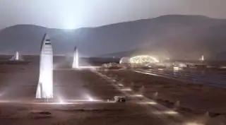
Science news · SpaceX’s 1st crewed Mars mission could launch as early as 2024 -
 Science news · The Arecibo Observatory radio telescope in Puerto Rico has collapsed (Sad Day in Astronomy)
Science news · The Arecibo Observatory radio telescope in Puerto Rico has collapsed (Sad Day in Astronomy)
- Lectures and events · Scientific symposium: "Discussions on modern and contemporary physics"
-
 Science news · Astronomers Just Solved a Dark Matter Mystery (Undergoing Tidal Disruption), Saving Our Galaxy Formation Models
Science news · Astronomers Just Solved a Dark Matter Mystery (Undergoing Tidal Disruption), Saving Our Galaxy Formation Models
November 2020
-
 AUASS news · Astrophotos
AUASS news · Astrophotos
- Lectures and events · Lecture: "Recent proposals on the black hole information paradox"
-
 Lectures and events · The IAU holds its 5th Middle East and Africa regional meeting, opening its conference on astronomy education and research for the next generations
Lectures and events · The IAU holds its 5th Middle East and Africa regional meeting, opening its conference on astronomy education and research for the next generations
-
 AUASS news · A letter of thanks and appreciation
AUASS news · A letter of thanks and appreciation
-
 Lectures and events · The 5th Middle East and Africa Regional IAU Meeting, 10–12 November 2020
Lectures and events · The 5th Middle East and Africa Regional IAU Meeting, 10–12 November 2020
-
 AUASS news · The Arab Planetarium Society – first board elections
AUASS news · The Arab Planetarium Society – first board elections
- AUASS news · "Sky Guide" magazine (Sky at Night in Arabic) – November 2020
- Lectures and events · An online course for those interested in radio astronomy
-
 Lectures and events · Announcing MEARIM, 10–12 November 2020
Lectures and events · Announcing MEARIM, 10–12 November 2020
- AUASS news · Al-Thuraya magazine – November issue
October 2020
September 2020
-
 AUASS news · World Space Week
AUASS news · World Space Week
-
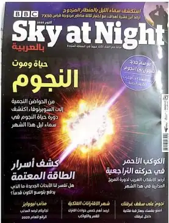
Science news · Sky At Night -
 Lectures and events · Public invitation – lecture: "Dark matter: the evolution of the idea, the evidence, its gravitational properties and its many interpretations"
Lectures and events · Public invitation – lecture: "Dark matter: the evolution of the idea, the evidence, its gravitational properties and its many interpretations"
-
 Lectures and events · Public invitation – lecture: "A radio study of supernova remnants in the Magellanic Clouds"
Lectures and events · Public invitation – lecture: "A radio study of supernova remnants in the Magellanic Clouds"
- AUASS news · Scientific American Mind 2020-09
- AUASS news · /BBC Science Focus Magazine Collection Volume12 The Ultimate Guide to the Solar System
- AUASS news · SkyNews September October 2020
- Science news · Physics For You – August 2020
-
 Lectures and events · Invitation to the Virtual Arab Camp for Space and Astronomy Sciences, 3–5 September 2020
Lectures and events · Invitation to the Virtual Arab Camp for Space and Astronomy Sciences, 3–5 September 2020
August 2020
-
 Lectures and events · Invitation to the lecture "Modelling spatial and temporal changes of urban heat islands and their drivers using remote sensing and GIS" by Dr. Jasim Mohammed Ali
Lectures and events · Invitation to the lecture "Modelling spatial and temporal changes of urban heat islands and their drivers using remote sensing and GIS" by Dr. Jasim Mohammed Ali
-
 Lectures and events · Invitation to the lecture "Preparing and producing digital maps" by Dr. Suttam Al-Shqour
Lectures and events · Invitation to the lecture "Preparing and producing digital maps" by Dr. Suttam Al-Shqour
- AUASS news · Obituary
July 2020
-
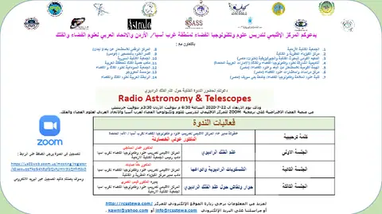
Lectures and events · دعوة عامة – محاضرة بعنوان “Radio Astronomy & Telescopes “ -
 Lectures and events · Invitation to the workshop "Binary and multiple stars: from observations to estimates"
Lectures and events · Invitation to the workshop "Binary and multiple stars: from observations to estimates"
-
 Lectures and events · The third launch date for the Hope Probe, per the latest update from the UAE Space Agency
Lectures and events · The third launch date for the Hope Probe, per the latest update from the UAE Space Agency
-
 Lectures and events · Lecture: "The Big Bang"
Lectures and events · Lecture: "The Big Bang"
-
 Lectures and events · Invitation to the live broadcast of the launch of the Emirati Mars mission, the Hope Probe
Lectures and events · Invitation to the live broadcast of the launch of the Emirati Mars mission, the Hope Probe
-
 Lectures and events · Public invitation – lecture: "The Big Bang or cosmic evolution, in light of the 2019 Nobel Prize in Physics"
Lectures and events · Public invitation – lecture: "The Big Bang or cosmic evolution, in light of the 2019 Nobel Prize in Physics"
-
 Lectures and events · Public invitation – specialised workshop: satellite navigation technology and applications, especially China's BeiDou system, in light of the COVID-19 pandemic
Lectures and events · Public invitation – specialised workshop: satellite navigation technology and applications, especially China's BeiDou system, in light of the COVID-19 pandemic
-
Science news · Public Invitation – A Workshop on the BDS/GNSS Technologies and Applications in Fighting COVID-19
-
 Lectures and events · Public invitation – scientific workshop for International Meteorite Day
Lectures and events · Public invitation – scientific workshop for International Meteorite Day
June 2020
- Lectures and events · Public invitation – workshop: "The Emirates Mars Mission: from dream to reality"
-
 Lectures and events · Public invitation – joint lecture: "International legal rules for protecting the space environment" and "Civil liability for GNSS"
Lectures and events · Public invitation – joint lecture: "International legal rules for protecting the space environment" and "Civil liability for GNSS"
-
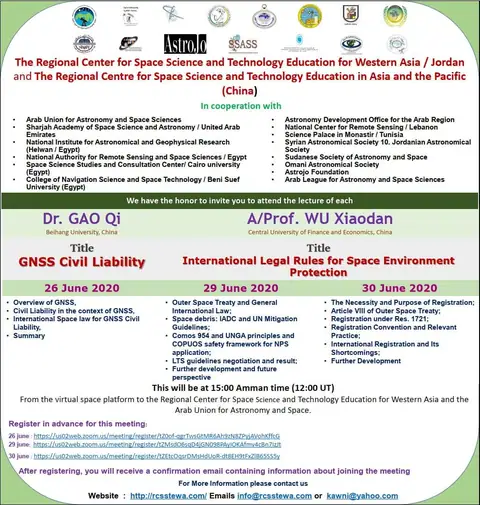
Science news · General invitation – Joint lecture entitled “GNSS Civil Liability ” and “International Legal Rules for Space Environment Protection” - Articles · New US-UK agreement boosts UK’s spaceport plans
- Articles · How space technologies help during COVID-19 and what’s new with UAE’s Space Agency
-
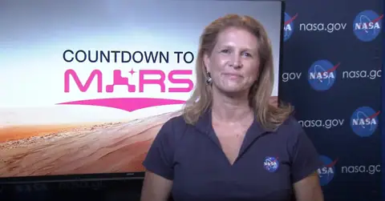
Science news · NASA’s Mars 2020 Perseverance Rover – Countdown to Mars (Media Briefing) -
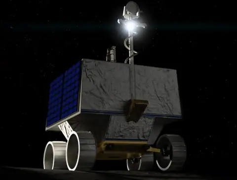
Articles · NASA is about to farm out the launch of its first moon rover in 48 years to a commercial rocket company -
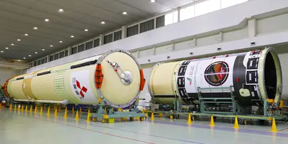
Articles · MHI Ships the Core of the H-IIA Launch Vehicle (H-IIA No.42) from Nagoya Aerospace Systems Works Tobishima Plant -
 Science news · Falcon 9 launches 58 Starlink satellites and 3 @planetlabs Skysats
Science news · Falcon 9 launches 58 Starlink satellites and 3 @planetlabs Skysats
-
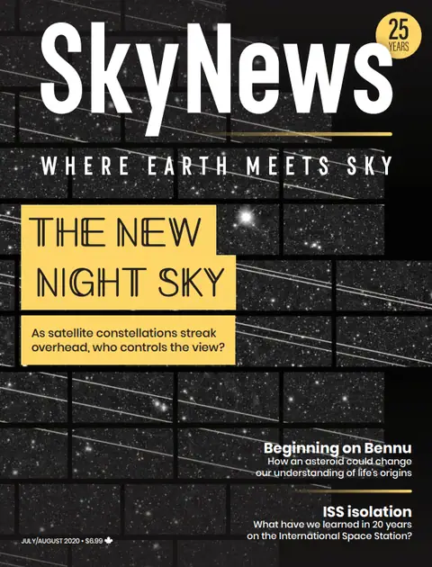
Science news · SkyNews Magazine -
 Lectures and events · Invitation to the partial solar eclipse event at Amman Citadel
Lectures and events · Invitation to the partial solar eclipse event at Amman Citadel
- Lectures and events · Public invitation – joint lecture: "An overview of the wealth of meteorites in the Arab world" and "Meteorites from Morocco: a model for the development of science in the Arab countries"
- Science news · MHI Ships the Core of the H-IIA Launch Vehicle (H-IIA No.42) from Nagoya Aerospace Systems Works Tobishima Plant
-
 Lectures and events · Public invitation – lecture: "Active galaxies and quasars"
Lectures and events · Public invitation – lecture: "Active galaxies and quasars"
-
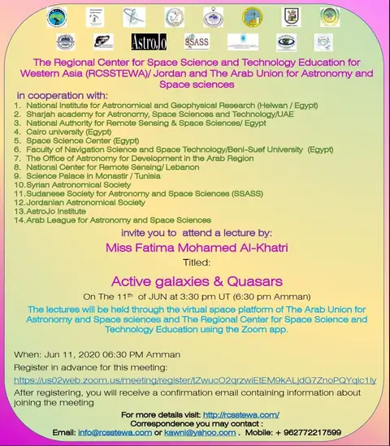
Science news · Public Invitation- Lecture Entitled “Active galaxies & Quasars “ -
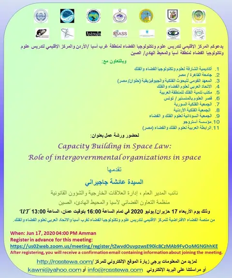
Lectures and events · دعوة عامة- ورشة بعنوان “Capacity Building in Space Law: Role of intergovernmental organizations in space” -
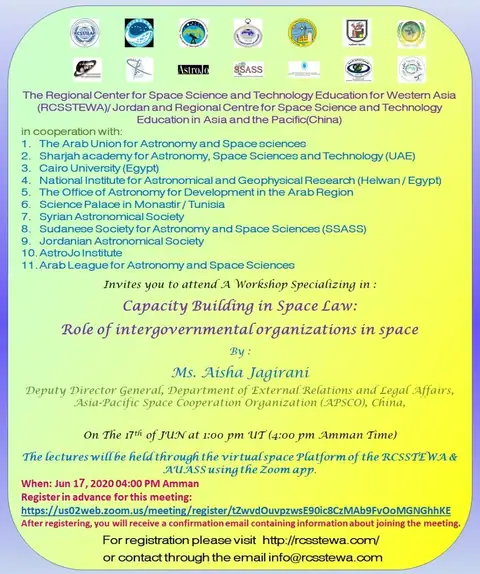
Lectures and events · Invitation – A workshop entitled “Space Law and its Applications” -
 Lectures and events · Workshop: "GNSS Reflections and its Remote Sensing Applications"
Lectures and events · Workshop: "GNSS Reflections and its Remote Sensing Applications"
-
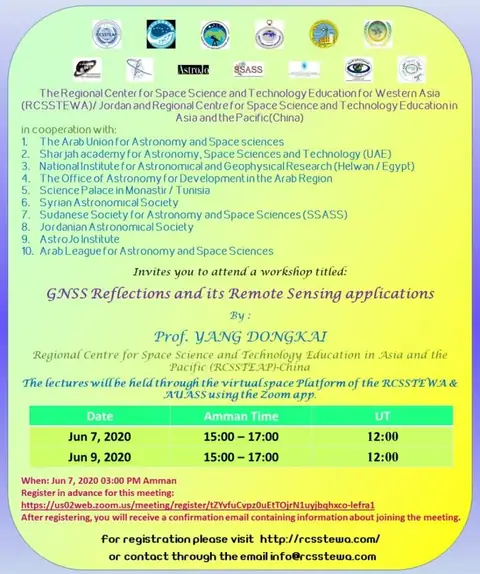
Lectures and events · Workshop Entitled ” GNSS Reflections and its Remote Sensing Applications “ -
 Lectures and events · Arab Space Cooperation Group meets to discuss the 813 satellite and the group's charter
Lectures and events · Arab Space Cooperation Group meets to discuss the 813 satellite and the group's charter
May 2020
-
 Lectures and events · Invitation – lecture: "Discovery of a new meteorite with an unusual composition in Jordan"
Lectures and events · Invitation – lecture: "Discovery of a new meteorite with an unusual composition in Jordan"
-
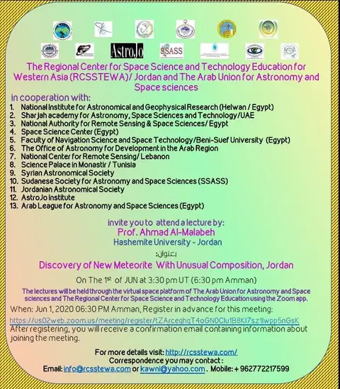
Lectures and events · Invitation – Lecture Entitled “Discovery of New Meteorite With Unusual Composition, Jordan “ -
 Lectures and events · Public invitation – lecture: "Satellite laser ranging from Egypt"
Lectures and events · Public invitation – lecture: "Satellite laser ranging from Egypt"
-
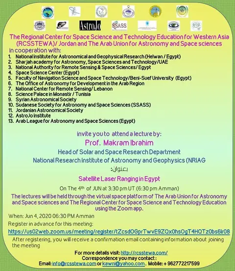
Science news · General invitation – lecture entitled “Satellite Laser Ranging in Egypt “ -
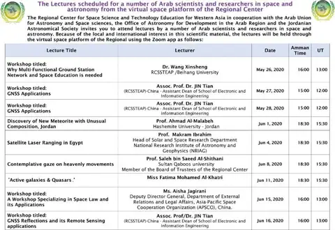
Science news · The Lectures scheduled for a number of Arab scientists and researchers in space and astronomy from the virtual space platform of the Regional Center -
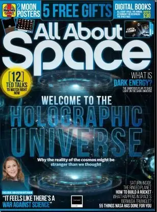
AUASS news · All About Space 2020 - Lectures and events · Full recording of the lecture "Reflections on the life of the late Prof. Paul Kunitzsch" by astronomer Hani Al-Dhulaie, a founder of the Jordanian Astronomical Society
-
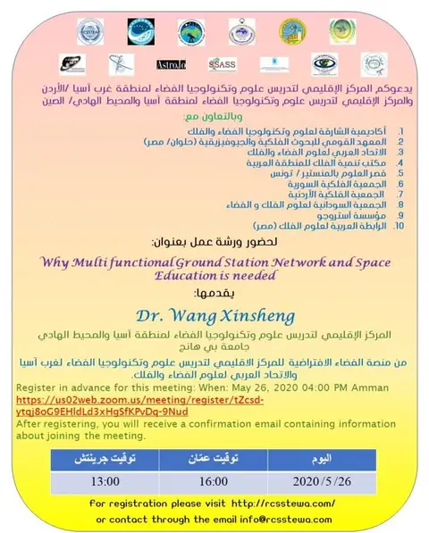
Lectures and events · ورشة عمل بعنوان – Why Multi Functional Ground Station Network and Space Education is Needed -
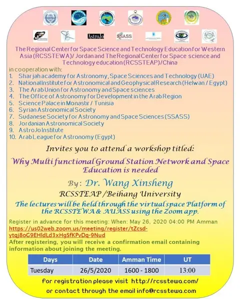
Lectures and events · WorkShop : “Why Multi functional Ground Station Network and Space Education is needed” -
 Lectures and events · Workshop: "GNSS Applications"
Lectures and events · Workshop: "GNSS Applications"
-
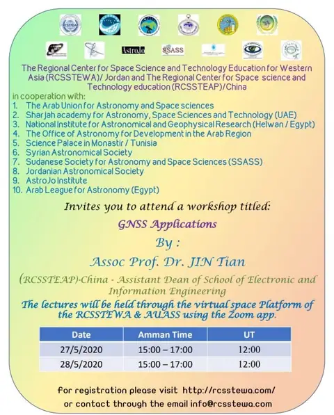
Lectures and events · WorkShop : “GNSS APPLICATIONS” -
 Lectures and events · Public invitation – lecture: "The sundial of the Umayyad Mosque between Ibn al-Shatir and Al-Tantawi"
Lectures and events · Public invitation – lecture: "The sundial of the Umayyad Mosque between Ibn al-Shatir and Al-Tantawi"
-
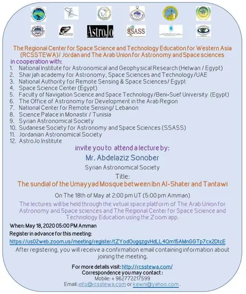
Science news · Public Invitation – Lecture entitled “The sundial of the Umayyad Mosque between Ibn Al-Shater and Tantawi” -
 Lectures and events · Public invitation – lecture: "Monitoring water quality with remote sensing: a study of Lake Qaraoun in Lebanon"
Lectures and events · Public invitation – lecture: "Monitoring water quality with remote sensing: a study of Lake Qaraoun in Lebanon"
-
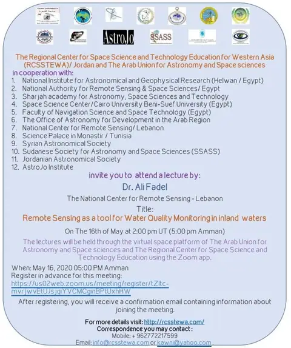
Science news · General invitation – a lecture entitled “Remote Sensing as a tool for Water Quality Monitoring in inland waters” - Science news · More women needed to join UAE space sector
-
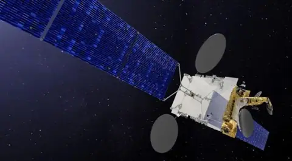
Science news · SpaceX will launch a 4-ton satellite for Egypt’s Nilesat in 2022 -
 Lectures and events · The fourth meeting of the representatives of the member states of the Arab Space Cooperation Group
Lectures and events · The fourth meeting of the representatives of the member states of the Arab Space Cooperation Group
-
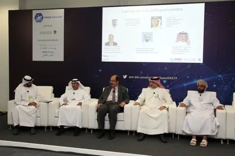
Science news · DubaiAirshow DAS19 hosts Space Tech Talks -
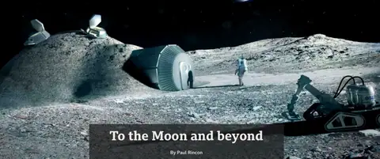
Science news · To the Moon and beyond By Paul Rincon -
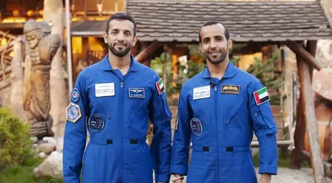
Science news · UAE to select next astronauts in January -
 Lectures and events · Public invitation – lecture: "Astronomy for development in the era of COVID-19"
Lectures and events · Public invitation – lecture: "Astronomy for development in the era of COVID-19"
-
 Science news · General Invitation – Lecture titled “Astronomy for Development in the Era of COVID 19”
Science news · General Invitation – Lecture titled “Astronomy for Development in the Era of COVID 19”
-
 Lectures and events · Workshop: "Global navigation satellite systems"
Lectures and events · Workshop: "Global navigation satellite systems"
-
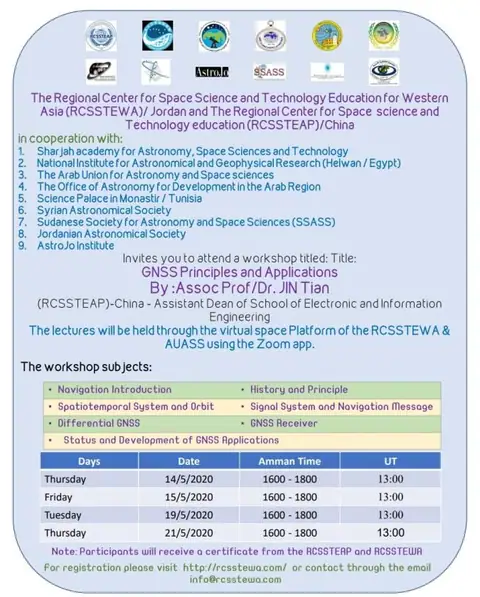
Lectures and events · Workshop entitled “Global Space Navigation Systems” -
 Science news · Space Debris: Growing Problem That Is Surprisingly Costly
Science news · Space Debris: Growing Problem That Is Surprisingly Costly
- Science news · The UAE is going to Mars. Here’s the plan for its Hope orbiter.
-
 Science news · Deputy Technical Officer Adnan Al Muhairi on Yahsat’s technical journey
Science news · Deputy Technical Officer Adnan Al Muhairi on Yahsat’s technical journey
- Science news · AJYAL Space Program
-
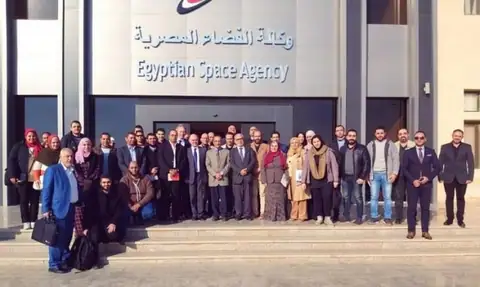
Science news · Egyptian Space Agency (EgSA) Is Hiring For Multiple Positions -
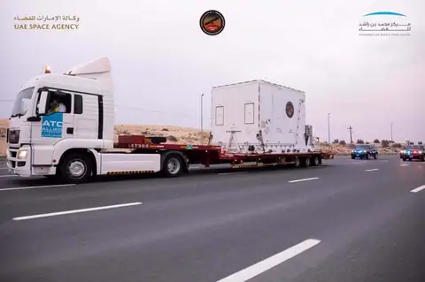
Science news · UAE’s Hope probe delivered to Japan space centre ahead of launch -
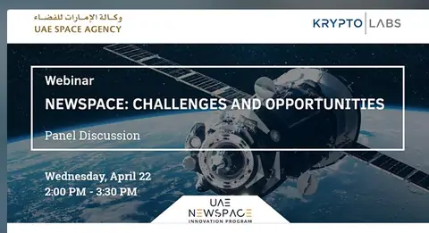
Lectures and events · Webinar – NewSpace: Challenges and Opportunities -
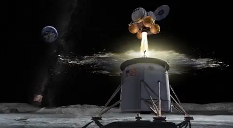
Science news · White House looks for international support for space resource rights -
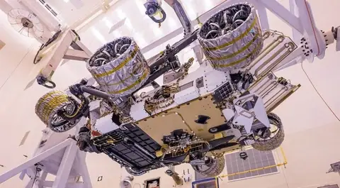
Science news · Mars 2020 remains on track for July launch -
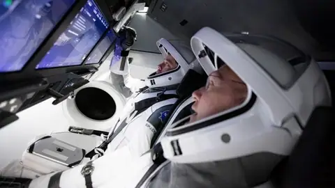
Science news · NASA and SpaceX set historic first astronaut launch for May 27 -
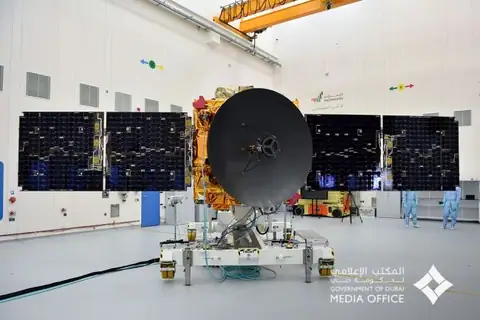
Science news · Meet Hope: The UAE’s first spacecraft bound for Mars is now complete -
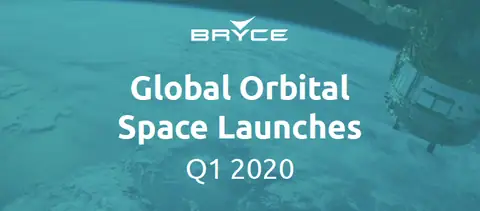
Science news · Global Orbital Space Launches Q1 2020 -
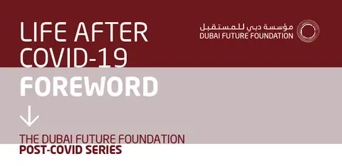
Science news · LIFE AFTER COVID-19 FOREWORD THE DUBAI FUTURE FOUNDATION -
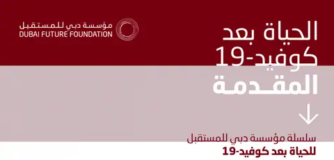
Science news · Life-After-Covid-19-Foreword-ARA تنزيل -
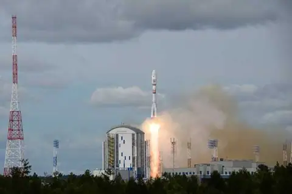
Science news · Exolaunch to Deliver UAE Space Agency’s Small Satellite into Orbit on Soyuz-2 -
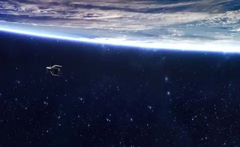
Science news · Space industry seeks help amid coronavirus pandemic - Science news · Code in Space|Orbital Space
- Science news · UAE Space Agency Unites Industry Leaders In GSIA Strategic Workshop
-
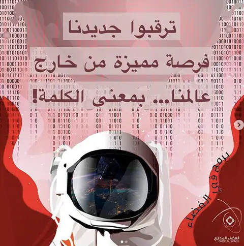
Science news · برمج في الفضاء | Orbital Space -
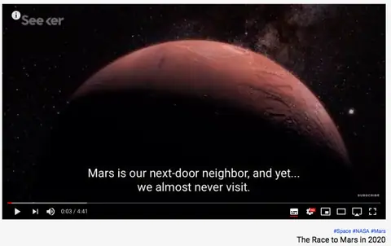
Science news · The Race to Mars in 2020 -
 Science news · The Arab world’s first interplanetary mission! The Emirates Mars Mission “Hope Probe”
Science news · The Arab world’s first interplanetary mission! The Emirates Mars Mission “Hope Probe”
-
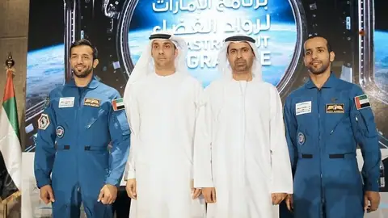
Science news · UAE to announce two new astronauts in January 2021 -
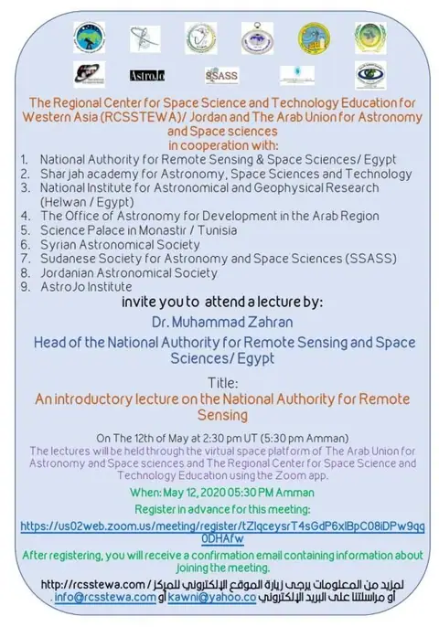
Science news · Public Invitation – Lecture entitled ” An introductory lecture on the National Authority for Remote Sensing “ -
 Lectures and events · Public invitation – an introductory lecture on the National Authority for Remote Sensing
Lectures and events · Public invitation – an introductory lecture on the National Authority for Remote Sensing
-
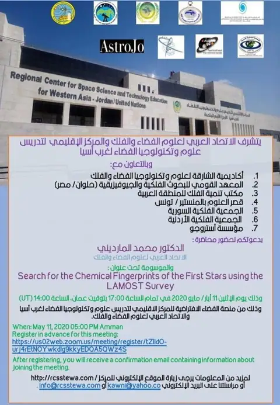
Lectures and events · دعوة عامة – محاضرة بعنوان “Search for the Chemical Fingerprints of the First Stars using the LAMOST Survey “ -
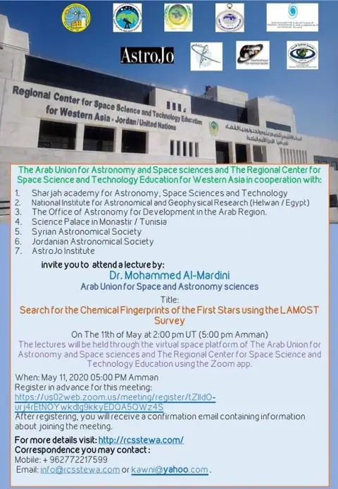
Science news · Public Invitation – Lecture entitled “Search for the Chemical Fingerprints of the First Stars using the LAMOST Survey” -
 Lectures and events · Lecture on black holes and gravitational waves by Prof. Shawqi Al-Dallal
Lectures and events · Lecture on black holes and gravitational waves by Prof. Shawqi Al-Dallal
-
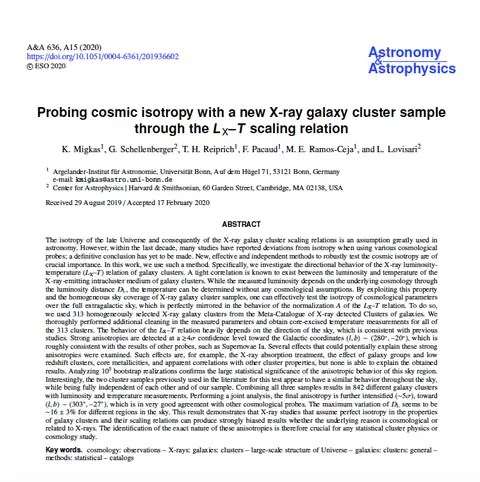
Science news · كتاب قيم بعنوان “Probing cosmic isotropy with a new x-ray galaxy cluster sample” -
 Lectures and events · Public invitation – lecture: "How to identify the components of exoplanet atmospheres"
Lectures and events · Public invitation – lecture: "How to identify the components of exoplanet atmospheres"
-
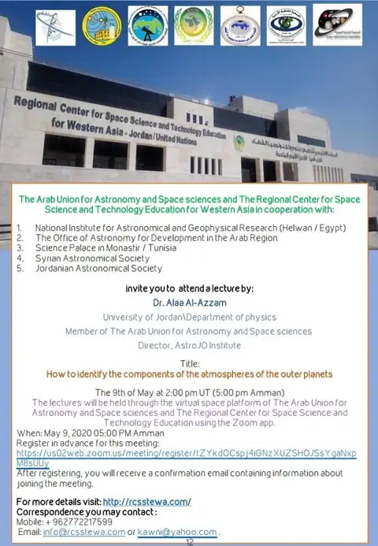
Science news · Public Invitation – Lecture entitled “How to identify the components of the atmospheres of the outer planets” -
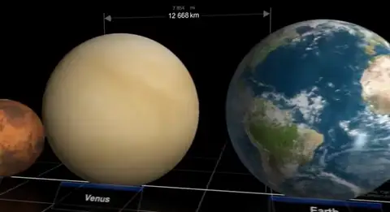
Science news · Star Size Comparison 2 -
 Lectures and events · Public invitation – "The Wolfram Physics Project: a project to find the fundamental theory of physics"
Lectures and events · Public invitation – "The Wolfram Physics Project: a project to find the fundamental theory of physics"
-
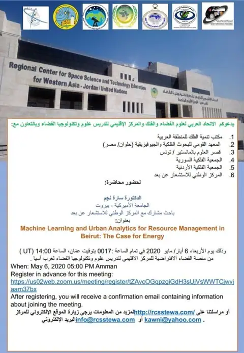
Lectures and events · دعوة عامة – محاضرة بعنوان ” Machine Learning and Urban Analytics for Resource Management in Beirut: The Case for Energy “ -
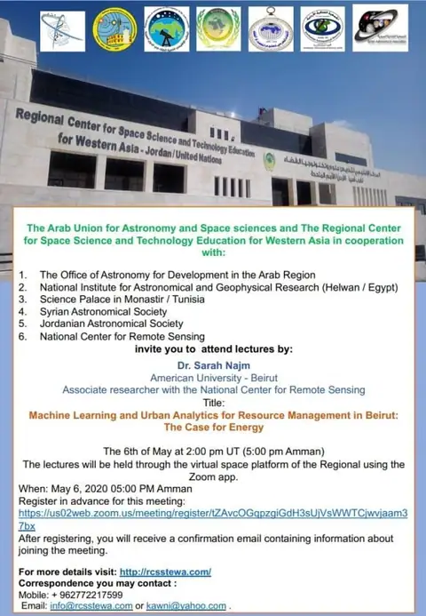
Science news · Public Invitation – Lecture entitled “Machine Learning and Urban Analytics for Resource Management in Beirut: The Case for Energy “ -
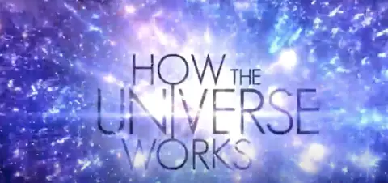
Science news · Dark matter and the formation of galaxies -
 Science news · How to calculate prayer times
Science news · How to calculate prayer times
-
 Science news · Astronomy – Libra
Science news · Astronomy – Libra
-
 Science news · Astronomy – Leo
Science news · Astronomy – Leo
-
 Science news · Astronomy – Cancer
Science news · Astronomy – Cancer
-
 Science news · Astronomy – Gemini
Science news · Astronomy – Gemini
-
 Science news · Astronomy – Aries
Science news · Astronomy – Aries
- Science news · The UAE is going to Mars. Here’s the plan for its Hope orbiter
-
 Science news · Planets and stars in our galaxy
Science news · Planets and stars in our galaxy
-
 Science news · Umm Al Dami Observatory
Science news · Umm Al Dami Observatory
-
 Science news · Astronomical minutes – Abdul Razzaq Al-Balushi
Science news · Astronomical minutes – Abdul Razzaq Al-Balushi
-
 Science news · What is superficial pairing?
Science news · What is superficial pairing?
-
 Science news · Core-Collapse Supernovae (09-03)
Science news · Core-Collapse Supernovae (09-03)
- Lectures and events · Public invitation – lecture: "Exotic matter produced in neutron star mergers"
- Science news · General Invitation – Lecture titled “Exotic Matter Produced in Neutron star Mergers”
- Lectures and events · Lectures scheduled for a number of Arab scientists and researchers in space and astronomy from the virtual space platform of the Regional Center
-
 Science news · International Astronomy Day 2020
Science news · International Astronomy Day 2020
- Science news · The book of amazing space inventions
- Science news · New Scientist Magazine
- Science news · Astronomy Magazine
- Lectures and events · دعوة عامة – محاضرة بعنوان “Chasing the signature of a single prolific r-process event in an ultra-faint dwarf galaxy “
- Lectures and events · Public Invitation – lecture entitled “Chasing the signature of a single prolific r-process event in an ultra-faint dwarf galaxy “
April 2020
- AUASS news · The evolution of stars part1
- AUASS news · The evolution of stars part2
- AUASS news · The evolution of stars part3
- AUASS news · The evolution of stars part4
- Science news · Lessons from studying galaxies part1
- Science news · Lessons from studying galaxies part2
- Science news · Lessons from studying galaxies part3
- Science news · Lessons from studying galaxies part4
- Science news · The first comprehensive map of the moon
-
 Lectures and events · The 5th Middle East and Africa Regional IAU Meeting, 15–17 September 2020
Lectures and events · The 5th Middle East and Africa Regional IAU Meeting, 15–17 September 2020
-
Science news · MEARIM V 2020 – September 15-17, 2020
- Science news · China’s first Mars exploration mission named Tianwen-1
- Lectures and events · Public invitation – lecture: "Extraction of Land Surface Temperature from Satellite Images"
- Lectures and events · Public invitation – lecture: "Sudan's experience in applying a fundamental geospatial data map"
- Lectures and events · Public invitation – "Lessons learned from studying galaxies"
- Lectures and events · Public invitation – lecture: "The formation and evolution of stars"
-
 Lectures and events · Public invitation – lecture: "Hubble Space Telescope (HST): 30 Years of Exploring the Universe"
Lectures and events · Public invitation – lecture: "Hubble Space Telescope (HST): 30 Years of Exploring the Universe"
-
 Lectures and events · Public invitation – lecture: "Space technology in the study of climate change"
Lectures and events · Public invitation – lecture: "Space technology in the study of climate change"
-
 Lectures and events · Scientific symposium: "Seeking the crescent of Ramadan between Sharia and astronomy"
Lectures and events · Scientific symposium: "Seeking the crescent of Ramadan between Sharia and astronomy"
- AUASS news · Under the auspices of His Eminence, the Grand Mufti of the Kingdom, Sheikh Abdul Karim…
- Science news · Arab Scientists Lectures announced through RCSSTEWA virtual space platform
- Lectures and events · Public invitation – lecture: "Raster Interpolation"
- Lectures and events · Public invitation – lecture: "Practice training building geodatabase using subtype & domain & symbology categories"
- Lectures and events · Public invitation – lecture: "Basic Concept in Building Database"
- Lectures and events · Public invitation – lecture: "Basic Concept in Building Database"
- Lectures and events · Public invitation – lecture: "Thematic Maps"
- Lectures and events · Lectures scheduled for a number of Arab scientists and researchers in space and astronomy from the virtual space platform of the Regional Center
-
 Science news · The Zeitgeist / Part 1
Science news · The Zeitgeist / Part 1
March 2020
February 2020


January 2020
No posts of this type in this year.